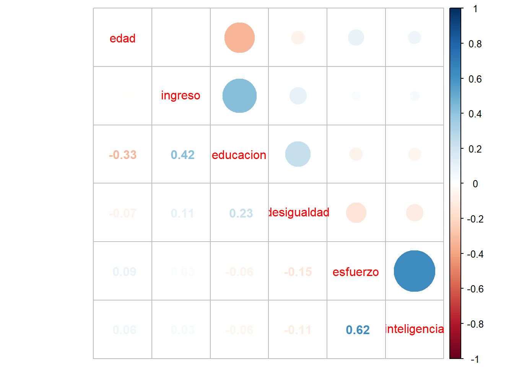
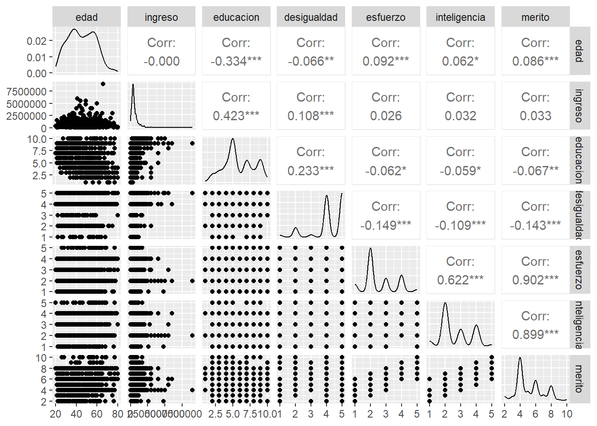
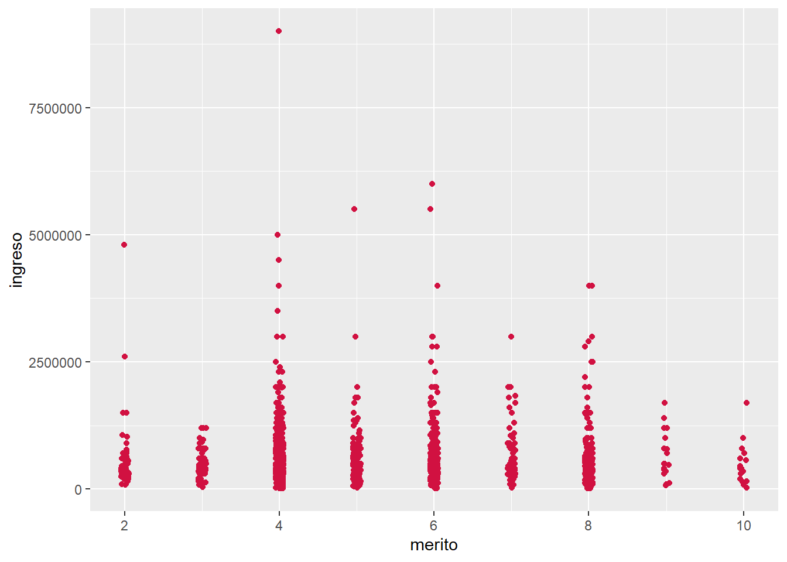
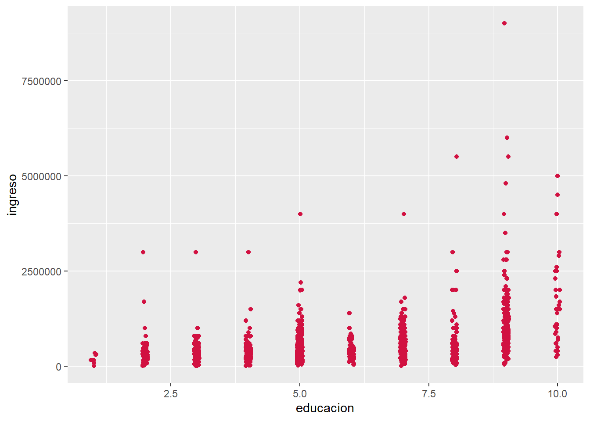
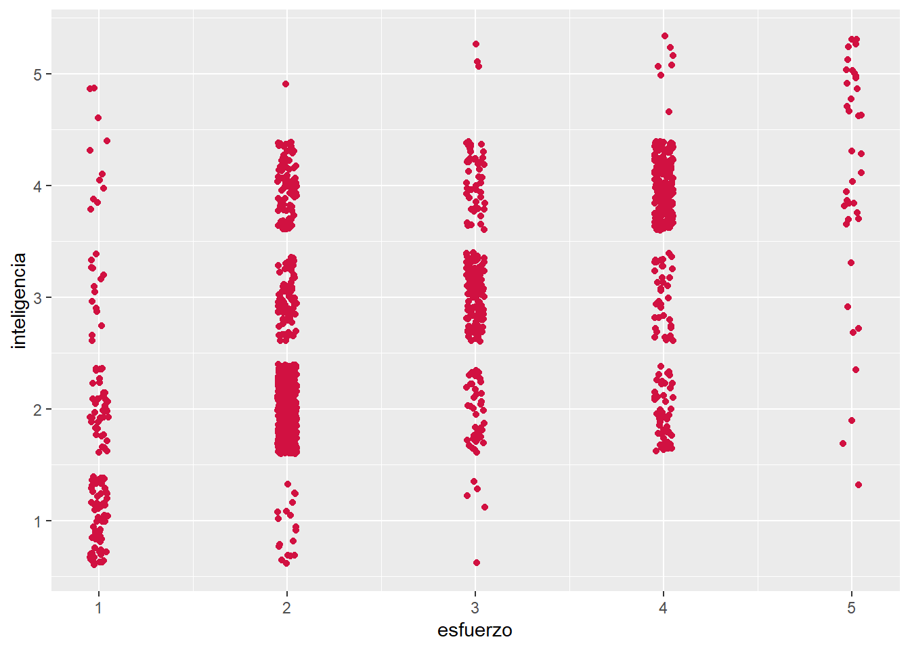
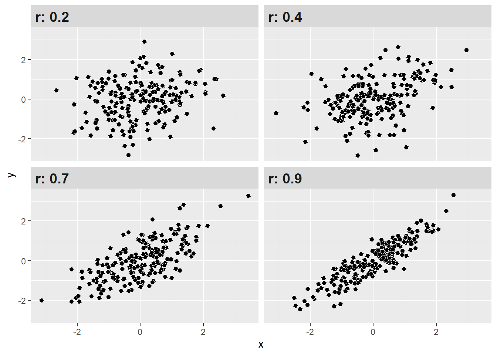

Código
load(url(("https://github.com/cursos-metodos-facso/metod1-MCS/raw/main/resource/files/ELSOC_W05_v1.0_R.RData")))R data analisis
El desarrollo de esta guía tiene por objetivo revisar algunos procedimientos para la estimación de correlaciones y asociación de variables con R en general, que son necesarios para luego poder analizar e interpretar estas relaciones.
Por temas de orden y reproducibilidad, en este curso hemos separado en dos momentos el trabajo con datos, y dos archivos de código correspondientes, sin embargo, este práctico en específico combina todo en dos momentos de esta misma página:
Preparación: Parte 1
Análisis: Parte 2
En esta práctica trabajaremos con la ola 2021 Estudio Longitudinal Social de Chile (ELSOC), elaborado por COES. Para este ejercicio, obtendremos directamente esta base desde internet.
load(url(("https://github.com/cursos-metodos-facso/metod1-MCS/raw/main/resource/files/ELSOC_W05_v1.0_R.RData")))Para importar los datos en R debemos tener en consideración tres cosas:
Cómo se llaman los datos (en nuestro caso ELSOC_W05_v1.0_SPSS)
El formato de nuestros datos (en nuestro caso .sav)
El lugar de donde están alojados nuestros datos
Comencemos por preparar nuestros datos. Iniciamos cargando las librerías necesarias.
pacman::p_load(dplyr, # Manipulacion datos
sjmisc, # Descriptivos
sjPlot, # Tablas
sjlabelled, #etiquetas
kableExtra, #Tablas
GGally, # Correlaciones
corrplot) # Correlaciones
options(scipen = 999) # para desactivar notacion cientificaA continuación, exploramos la base de datos elsoc_2021.
dim(elsoc_2021) # Dimensiones[1] 2740 311Contamos con 311 variables (columnas) y 2740 observaciones (filas).
Para este ejemplo, vamos a utilizar dos variables numéricas (ingresos y edad) y cuatro variables categóricas (Educación, percepción de desigualdad y 2 de percepción de meritocracia).
proc_elsoc <- elsoc_2021 %>% select(edad=m0_edad, ingreso=m13, educacion=m01, desigualdad=c18_11, esfuerzo=c18_09, inteligencia=c18_10)Ahora, profundicemos un poco más y observemos algunos estadísticos descriptivos de resumen de nuestra base de datos. Utilizaremos la función descr del paquete sjmisc.
sjmisc::descr(proc_elsoc,
show = c("label","range", "mean", "sd", "NA.prc", "n")) %>%
kable(.,"markdown")| var | label | n | NA.prc | mean | sd | range | |
|---|---|---|---|---|---|---|---|
| 2 | edad | Edad del entrevistado | 2740 | 0.00000 | 49.411314 | 15.12879 | 66 (20-86) |
| 5 | ingreso | Ingreso mensual entrevistado (monto) | 1641 | 40.10949 | 579621.962827 | 616203.06223 | 9000999 (-999-9000000) |
| 3 | educacion | Nivel educacional | 2740 | 0.00000 | 5.455109 | 2.22973 | 9 (1-10) |
| 1 | desigualdad | Grado de acuerdo: Las diferencias de ingreso son demasiado grandes | 2740 | 0.00000 | -1.036496 | 64.56727 | 1004 (-999-5) |
| 4 | esfuerzo | Grado de acuerdo: Las personas son recompensadas por sus esfuerzos | 2740 | 0.00000 | -5.887591 | 84.14409 | 1004 (-999-5) |
| 6 | inteligencia | Grado de acuerdo: Las personas son recompensada por su inteligencia | 2740 | 0.00000 | -5.097810 | 80.70845 | 1004 (-999-5) |
¡ALTO! Tenemos algunos valores o casos perdidos en ciertas variables. ¿Cómo lidiar con los casos perdidos?
Trabajar con datos a menudo implica enfrentar valores perdidos (NA), lo que puede ser un gran desafío. Estos valores indican la ausencia de un valor en una base de datos. Los valores perdidos pueden originarse por diversas razones, como el sesgo de no respuesta en encuestas, errores en la entrada de datos o simplemente la falta de información para ciertas variables.
frq(proc_elsoc$esfuerzo)Grado de acuerdo: Las personas son recompensadas por sus esfuerzos (x) <numeric>
# total N=2740 valid N=2740 mean=-5.89 sd=84.14
Value | Label | N | Raw % | Valid % | Cum. %
-------------------------------------------------------------------------------
-999 | No Responde (no leer) | 4 | 0.15 | 0.15 | 0.15
-888 | No Sabe (no leer) | 14 | 0.51 | 0.51 | 0.66
-777 | Valor perdido por error tecnico | 0 | 0.00 | 0.00 | 0.66
-666 | Valor perdido por encuesta incompleta | 10 | 0.36 | 0.36 | 1.02
1 | Totalmente en desacuerdo | 237 | 8.65 | 8.65 | 9.67
2 | En desacuerdo | 1415 | 51.64 | 51.64 | 61.31
3 | Ni en desacuerdo ni de acuerdo | 422 | 15.40 | 15.40 | 76.72
4 | De acuerdo | 567 | 20.69 | 20.69 | 97.41
5 | Totalmente de acuerdo | 71 | 2.59 | 2.59 | 100.00
<NA> | <NA> | 0 | 0.00 | <NA> | <NA>proc_elsoc <- proc_elsoc %>% set_na(., na = c(-999, -888, -777, -666))
frq(proc_elsoc$esfuerzo)Grado de acuerdo: Las personas son recompensadas por sus esfuerzos (x) <numeric>
# total N=2740 valid N=2712 mean=2.56 sd=1.00
Value | Label | N | Raw % | Valid % | Cum. %
------------------------------------------------------------------------
1 | Totalmente en desacuerdo | 237 | 8.65 | 8.74 | 8.74
2 | En desacuerdo | 1415 | 51.64 | 52.18 | 60.91
3 | Ni en desacuerdo ni de acuerdo | 422 | 15.40 | 15.56 | 76.47
4 | De acuerdo | 567 | 20.69 | 20.91 | 97.38
5 | Totalmente de acuerdo | 71 | 2.59 | 2.62 | 100.00
<NA> | <NA> | 28 | 1.02 | <NA> | <NA>frq(proc_elsoc$educacion)Nivel educacional (x) <numeric>
# total N=2740 valid N=2740 mean=5.46 sd=2.23
Value | Label | N | Raw % | Valid % | Cum. %
------------------------------------------------------------------------------------
1 | Sin estudios | 18 | 0.66 | 0.66 | 0.66
2 | Educacion Basica o Preparatoria incompleta | 280 | 10.22 | 10.22 | 10.88
3 | Educacion Basica o Preparatoria completa | 243 | 8.87 | 8.87 | 19.74
4 | Educacion Media o Humanidades incompleta | 354 | 12.92 | 12.92 | 32.66
5 | Educacion Media o Humanidades completa | 819 | 29.89 | 29.89 | 62.55
6 | Tecnica Superior incompleta | 93 | 3.39 | 3.39 | 65.95
7 | Tecnica Superior completa | 355 | 12.96 | 12.96 | 78.91
8 | Universitaria incompleta | 167 | 6.09 | 6.09 | 85.00
9 | Universitaria completa | 360 | 13.14 | 13.14 | 98.14
10 | Estudios de posgrado (magister o doctorado) | 51 | 1.86 | 1.86 | 100.00
<NA> | <NA> | 0 | 0.00 | <NA> | <NA>La presencia de valores perdidos puede tener un impacto considerable en la precisión y confiabilidad de los análisis estadísticos, lo que a su vez puede conducir a resultados sesgados y conclusiones incorrectas.
Existen varias formas de tratar valores perdidos, que van desde enfoques simples hasta métodos más complejos, como la imputación. En esta ocasión, nos centraremos en las dos estrategias más comunes:
Este enfoque es uno de los más conocidos: implica remover completamente las observaciones que tienen valores perdidos en cualquier variable de interés. En otras palabras, si una fila/caso en un conjunto de datos tiene al menos un valor faltante en alguna de las variables que estás considerando, se eliminará por completo.
En R, esto podemos hacerlo con la función na.omit. Para hacer esto, sigamos estos pasos:
dim.na.omit.dim para asegurarnos que se borraron.proc_elsoc_original <- proc_elsoc
dim(proc_elsoc)[1] 2740 6sum(is.na(proc_elsoc))[1] 1251colSums(is.na(proc_elsoc)) edad ingreso educacion desigualdad esfuerzo inteligencia
0 1179 0 18 28 26 proc_elsoc <- na.omit(proc_elsoc)
dim(proc_elsoc)[1] 1545 6Ahora nos quedamos con 1545 observaciones sin casos perdidos.
Aunque es simple de implementar, con este enfoque podemos perder información importante, especialmente si los valores perdidos no se distribuyen aleatoriamente.
Siempre hay que intentar rescatar la mayor cantidad de casos posibles. Por lo tanto, si un listwise genera más de un 10% de casos perdidos se debe detectar qué variables esta produciendo esta pérdida e intentar recuperar datos.
A diferencia del anterior, este es un enfoque en el que las observaciones se utilizan para el análisis siempre que tengan datos disponibles para las variables específicas que se están analizando. En lugar de eliminar toda una fila si falta un valor, se eliminan solo los valores faltantes en las variables que se están analizando en ese momento.
Para hacer esto en R debemos siempre verificar e indicar en nuestro código si queremos (o no) remover los NA para realizar los análisis.
mean(proc_elsoc_original$esfuerzo); mean(proc_elsoc_original$edad); mean(proc_elsoc$desigualdad)[1] NA[1] 49.41131[1] 4.180583mean(proc_elsoc_original$esfuerzo, na.rm = TRUE); mean(proc_elsoc$edad, na.rm = TRUE); mean(proc_elsoc_original$desigualdad, na.rm = TRUE)[1] 2.564897[1] 45.09644[1] 4.135562Con ambas opciones tenemos resultados diferentes, ya que cambia la cantidad de casos analizados. La decisión final de qué método usar dependerá siempre del equipo de investigación.
¿Qué era la correlación?
La correlación es una medida de asociación entre variables, que describe el sentido (dirección) y fuerza de la asociación.
En otras palabras, nos permite conocer cómo y cuánto se relaciona la variación de una variable, con la variación de otra variable.
La correlación es una estimación de asociación de dos variables. Sin embargo, en los análisis de bases de datos usualmente se exploran asociaciones entre múltiples pares de variables, lo que genera una matriz de correlación. En una matriz, las variables se presentan en las filas y las columnas, y en las celdas donde se cruzan los pares de variables se muestra su coeficiente de correlación.
En su forma simple en R se aplica la función cor a la base de datos, y la guardamos en un objeto que le damos el nombre M para futuras operaciones:
M <- cor(proc_elsoc_original, use = "complete.obs")
M edad ingreso educacion desigualdad esfuerzo
edad 1.0000000000 -0.0004878506 -0.33414228 -0.0663105 0.09190282
ingreso -0.0004878506 1.0000000000 0.42342341 0.1078421 0.02624513
educacion -0.3341422793 0.4234234068 1.00000000 0.2334262 -0.06165636
desigualdad -0.0663105003 0.1078420502 0.23342621 1.0000000 -0.14897824
esfuerzo 0.0919028176 0.0262451260 -0.06165636 -0.1489782 1.00000000
inteligencia 0.0623189853 0.0324819654 -0.05894296 -0.1090589 0.62173928
inteligencia
edad 0.06231899
ingreso 0.03248197
educacion -0.05894296
desigualdad -0.10905885
esfuerzo 0.62173928
inteligencia 1.00000000Este es el reporte simple, pero no muy amigable a la vista. Para una versión más reportable, utilizamos la funcion tab_corr.
sjPlot::tab_corr(proc_elsoc_original,
triangle = "lower")| Edad del entrevistado | Ingreso mensual entrevistado (monto) | Nivel educacional | Grado de acuerdo: Las diferencias de ingreso son demasiado grandes |
Grado de acuerdo: Las personas son recompensadas por sus esfuerzos |
Grado de acuerdo: Las personas son recompensada por su inteligencia |
|
| Edad del entrevistado | ||||||
| Ingreso mensual entrevistado (monto) | -0.000 | |||||
| Nivel educacional | -0.334*** | 0.423*** | ||||
| Grado de acuerdo: Las diferencias de ingreso son demasiado grandes |
-0.066** | 0.108*** | 0.233*** | |||
| Grado de acuerdo: Las personas son recompensadas por sus esfuerzos |
0.092*** | 0.026 | -0.062* | -0.149*** | ||
| Grado de acuerdo: Las personas son recompensada por su inteligencia |
0.062* | 0.032 | -0.059* | -0.109*** | 0.622*** | |
| Computed correlation used pearson-method with listwise-deletion. | ||||||
La distinción entre listwise y pairwise es relevante al momento de estimar matricies de correlación, donde esta decisión debe estar claramente explicitada y fundamentada. En ejemplo de tabla anterior usamos listwise que es el argumento por defecto (y nos lo indica al final de la tabla).
Veamos como hacerlo con pairwise:
sjPlot::tab_corr(proc_elsoc_original,
na.deletion = "pairwise", # espeficicamos tratamiento NA
triangle = "lower")| Edad del entrevistado | Ingreso mensual entrevistado (monto) | Nivel educacional | Grado de acuerdo: Las diferencias de ingreso son demasiado grandes |
Grado de acuerdo: Las personas son recompensadas por sus esfuerzos |
Grado de acuerdo: Las personas son recompensada por su inteligencia |
|
| Edad del entrevistado | ||||||
| Ingreso mensual entrevistado (monto) | -0.005 | |||||
| Nivel educacional | -0.387*** | 0.415*** | ||||
| Grado de acuerdo: Las diferencias de ingreso son demasiado grandes |
-0.090*** | 0.106*** | 0.215*** | |||
| Grado de acuerdo: Las personas son recompensadas por sus esfuerzos |
0.105*** | 0.025 | -0.103*** | -0.139*** | ||
| Grado de acuerdo: Las personas son recompensada por su inteligencia |
0.088*** | 0.032 | -0.120*** | -0.104*** | 0.611*** | |
| Computed correlation used pearson-method with pairwise-deletion. | ||||||
Con esta mejor visualización, algunas observaciones sobre la matriz de correlaciones:
educación e ingreso es 0.415.Otra manera de presentar matrices de correlación es mediante gráficos. Veamos un ejemplo con la función corrplot.mixed de la librería corrplot sobre nuestra matriz M ya creada.
corrplot.mixed(M)
Este gráfico/matriz representa el grado de asociación entre variables mediante el tamaño de los círculos e intensidad de colores, y el signo de la asociación se representa con una gradiente de colores que va del azul (positivo) al rojo (negativo).
Otra manera de graficar la matriz es con la función ggpairs del paquete GGally, que nos entrega no solo el valor del coeficiente y su significancia (***), si no que también un scatter del cruce entre variables.
proc_elsoc <- proc_elsoc %>%
rowwise() %>%
mutate(merito = sum(c(esfuerzo, inteligencia), na.rm = TRUE))
ggpairs(proc_elsoc)
Finalmente, también se puede representar la correlación entre dos variables en un gráfico de nube de puntos o scatterplot.
sjPlot::plot_scatter(proc_elsoc, edad, ingreso)
sjPlot::plot_scatter(proc_elsoc, merito, ingreso)
sjPlot::plot_scatter(proc_elsoc, educacion, ingreso)
sjPlot::plot_scatter(proc_elsoc, esfuerzo, inteligencia)
Donde:

En el caso de nuestra nube de puntos entre edad y estatus social subjetivo, observamos que no hay asociación (lo que ya era indicado por su correlación de -0.07 observada en la matriz de correlaciones).
¿Y cómo puedo saber si el valor de la correlación es alto, medio o bajo? Si bien la correlación no nos indica causalidad, si nos permite conocer la dirección y fuerza de asociación entre dos variables. Un estándar para determinar qué tan fuerte es dicha asociación en las ciencias sociales es el propuesto por Cohen (1998).
| r | Significado aproximado (Cohen 1988) |
|---|---|
| < ±0.1 | Muy pequeño |
| ±0.1–0.3 | Pequeño |
| ±0.3–0.5 | Moderado |
| >±0.5 | Grande |
Con estos criterios podemos interpretar de mejor manera nuestros resultados de correlación. Como se observa, mientras más alto (sea en + o -) el coeficiente, más juntos estarán los datos (puntos), mostrando un patrón.

Interpretación
Recordemos nuestra matriz del comienzo:
Tenemos que la correlación entre la variable de ingresos y nivel educacional es 0,42. ¿Cómo interpreto esto?
Una manera recomendable es la siguiente:
El coeficiente de correlación de Pearson entre ingresos y nivel educacional es positivo y moderado (r = 0.3) según Cohen (1988).